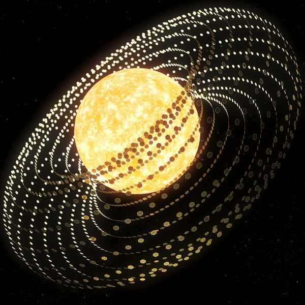

Freeman Dyson (1923-2020) fue un físico y matemático británico-estadounidense conocido por sus contribuciones en la teoría cuántica de campos y por su propuesta de la "Esfera de Dyson", una estructura hipotética en el espacio que podría ser construida por una civilización avanzada para recolectar la energía de su estrella madre.
La idea de la Esfera de Dyson surgió de la necesidad de encontrar soluciones energéticas sostenibles para el futuro de la humanidad.¿Pero donde podemos encontrar una fuente casi ilimita de energia?:
El Sol, la fuente de energía suprema.
Una caldera cien trillones más potente que nuestro reactor nuclear más eficiente.
Brilla con la energía de un billón de bombas nucleares por segundo.
¿Y cómo podemos conseguir esta energía? No un poco, la queremos toda.
Si queremos recopilar la mayor cantidad de energía física posible,
tendremos que construir la estructura más grande y ambiciosa del universo;("La esfera Dyson").
Una megaestructura que envuelve una estrella totalmente para capturar toda su energía.
Para una especie inteligente, construir una esfera Dyson será un salto tecnológico
similar al descubrimiento del fuego por nuestros ancestros
y supondrá la transición de especie planetaria a interestelar.
Nos guiará a una edad de exploración y expansión a una escala apenas imaginable.
Aunque nunca se ha construido una Esfera de Dyson, la idea ha generado mucho interés y ha sido explorada en obras de ciencia ficción y proyectos de investigación.
¿Y cuál será su aspecto? Un sólido caparazón que envuelva el Sol no parece lo mejor. Un cuerpo rígido tan grande sería vulnerable a los impactos y probablemente se haría añicos.A lo largo de las décadas, se han propuesto varias formas de construir una Esfera de Dyson, incluyendo una esfera sólida, una serie de anillos o satélites orbitando la estrella, y una esfera hueca que rodea la estrella. Se han considerado diversos materiales para su construcción, desde metales y rocas hasta nanotubos de carbono.
Un diseño más viable podría ser el enjambre Dyson. Un enorme conjunto de paneles en órbita cosechando y transmitiendo energía. Tal enjambre proporcionaría a la humanidad energía ilimitada, aunque construirlo no va a ser fácil. Como el Sol es muy grande, necesitamos muchos satélites.
Si cada satélite midiera un kilómetro cuadrado, necesitaríamos unos 30.000 billones para rodear el Sol. Y aunque pesen lo mínimo posible, harían falta unos 100 trillones de toneladas de material. Y luego la energía para juntar las piezas y llevarlas a su puesto alrededor del Sol. Además, necesitaríamos tener una infraestructura permanente en el espacio para empezar la construcción, por todos estos motivos la construccion de la esfera de dyson se la considera mas una ficcion que una realidad.